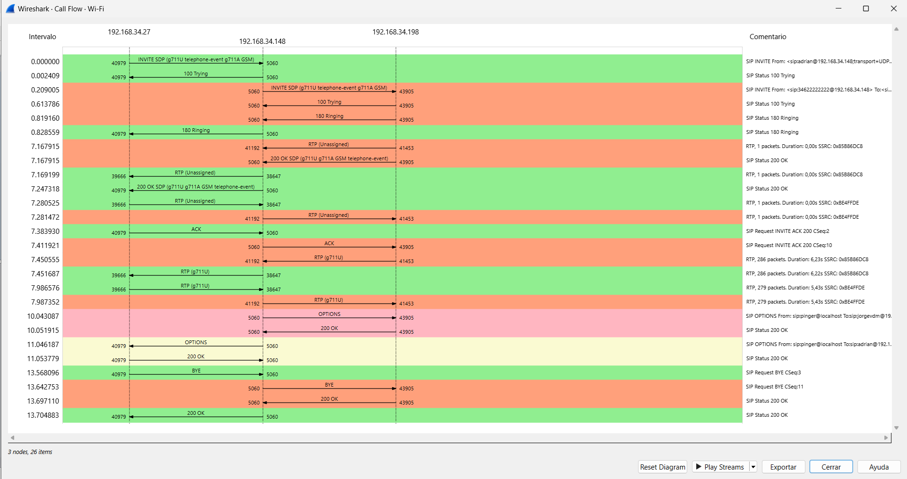
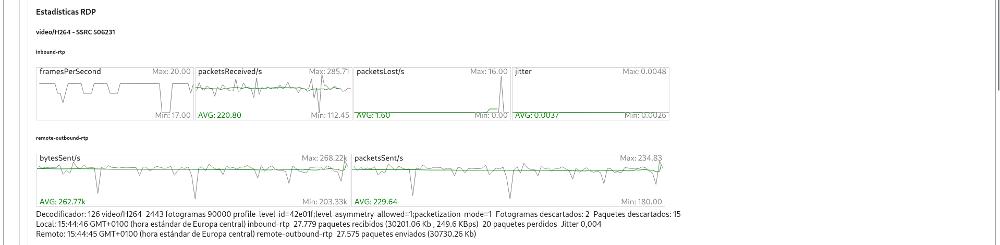
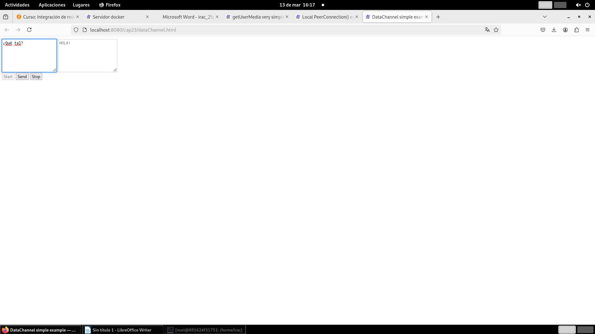

Integración de Redes, Aplicaciones y Contenidos · 2024–2025
SIP, WebRTC y MPEG-DASH: comunicaciones y streaming extremo a extremo
Tres prácticas conectadas por un mismo objetivo: desplegar servicios multimedia, observar el tráfico real y entender cómo se establecen, transportan y adaptan las comunicaciones.
Se conservan las tres memorias y el código HTML de DASH. Se omiten capturas auxiliares, apuntes de laboratorio y archivos temporales, salvo tres evidencias visuales representativas.
Puntos destacados
Lo más interesante del trabajo.
Cómo se trabajó
Del problema al resultado.
VoIP con SIP
Instalación del servidor, alta de usuarios, clientes, llamadas, videollamadas y análisis de tráfico.
WebRTC
Pruebas comparativas, análisis del establecimiento de llamada y despliegue de aplicación en contenedor.
Streaming adaptativo
Codificación en varias calidades, segmentación, MPD, dash.js y observación del cambio dinámico de bitrate.
Protección y medida
Pruebas con DRM, caché, métricas de buffer/calidad y comportamiento ante restricciones de red.
Evidencias visuales
Parte del trabajo realizado.



Stack y conceptos
Herramientas y competencias
Entregables seleccionados